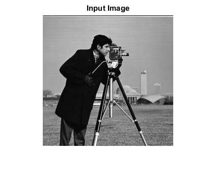
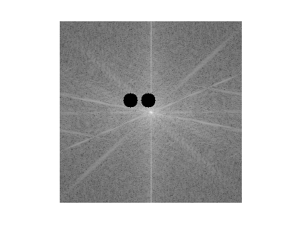

NOTCH_FILTER_CVIP
notch_filter_cvip() - performs the notch frequency domain filter.
Contents
SYNTAX
newImage = notch_filter_cvip(Input_spect,zone,number,interactive)
Input Parameters include :
- Input_spect - The input spectrum. It can be obtained by fft_cvip().
- zone - It must be a struct array containing the the fields X,Y,R which represent the location and the radius.
- number - The number of points that should be removed on the spectrum. This number decides how many of the locations in the variable zone is used.
- interactive - Instead of the variables zone and number, you can pass the value 1 to this variable and then input the information about the locations and radius using a dialog box.
Output Parameter includes :
- newImage - The output spectrum after notch filtering.
DESCRIPTION
Notch is a function to perform selective filtering on a user-defined area of an image or spectrum. It is often applied to frequency domain images to eliminate regular sinusoidal interference.
REFERENCE
1. Scott E Umbaugh. DIGITAL IMAGE PROCESSING AND ANALYSIS: Applications with MATLAB and CVIPtools, 3rd Edition.
EXAMPLE
% Read image Input_spect = imread('cam.bmp'); % block size block = []; % Calling fft function outImage = fft_cvip( Input_spect,block); % Zone x = [100 125]; y = [112 112]; r = [10 10]; zone = struct('X',{x},'Y',{y},'R',{r}); % number number = length(x); % Display input image figure;imshow(Input_spect);title('Input Image'); % Display output image filterIm = notch_filter_cvip(outImage,zone,number,0); figure;imshow(remap_cvip(log(1+abs(filterIm)))); inverseIm = ifft_cvip(filterIm,[]); figure;imshow(remap_cvip(inverseIm)); 
CREDITS
Author: Mehrdad Alvandipour, october 2016
Copyright © 2017-2018 Scott
E Umbaugh
For updates visit CVIP Toolbox Website